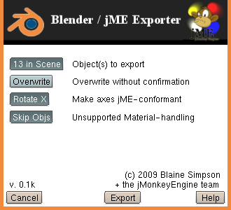

Blender ⇒ jME Exporter Help
Covers version ${product.version}.
Copyright 2009 by Blaine Simpson and the jME Dev Team,
with the included BSD open source license.
Contents
- Acknowledgements
- Interface
- Blender Settings Supported
- Usage Tips
- Mapping Blender items to jME items
- UV Coordinates and Values
- Importing into jME
Skin & Bones Exporting
Acknowledgements
The 0.2 series of the exporter introduces detailed support for Skin &
Bones.
Ashton V. was extremely helpful to the 0.2 effort, both for his keen
insight, and for his continual enthusiasm.
Without his encouragement, I would not have stuck it out to the end.
Sincere thanks also to Jushua Slack, for fixing an animation bug which had
halted all progress.
Interface
|

|
- Object(s) to export
Choose to export either all SELECTED exportable objects,
or all exportable objects in the active scene.
Toggle back and forth to see how many objects qualify each way.
- Export file overwrites
Choose whether to overwrite export files without confirmation.
If the target file does not exist yet, this setting has no effect.
- Make axes jME-conformant
Rotate the X axis by -90 degrees, to make the exported scene +Z forward.
- Unsupported Material-handling
This setting has no effect unless the items to be exported contain
unsupported materials.
Choose whether to skip objects which contain unsupported materials;
or to export such objects without the unsupported materials.
Toggle back and forth to see how many objects qualify each way
(export object counts are shown inside the top button).
- Max bone weightings/vert.
This has no effect unless you export Armatures which have Actions,
and you have selected "Include" for the following item.
If you have a 16 bone armature, it is very unlikely that more than 4
bones should influence the deformation of a single skin mesh
vertex. This limits the influence to the most influential X bones,
saving your game from what could be significant unnecessary skinning
computations.
If you look your model over and realize that no vertex should be
influenced by more than two bones, then do yourself a favor and turn
this setting down.
- Blender animations
If set to "Include", then when you export an Armature, the Actions for
that Amature will be exported also. "Exclude" and they will not.
|
Blender Settings Supported
The following Blender settings are converted preserved in an export.
- 3-vertex meshes. Converted to jME TriMeshes.
- 4-vertex meshes. Converted to jME QuadMeshes.
- 3- and 4- vertex meshes. Converted to jME TriMeshes.
- Blender object nesting (parent/child relationships) is preserved.
- Object coloring (saved as jME mesh defaultColor)
- Vertex coloring. Includes support for distinct per-face colors.
- Sticky UV texCoords.
- Per-face UV texCoords.
Includes support for distinct per-face colors, and the
"VCol Light" setting.
- Material sharing. Two-Sided of containing mesh is honored
(duplicated if necessary if material is shared).
- These Material colorings are converted
- Diffuse colors ("Col")
- Specular colors
- Alpha
- Specularity
- Emit
- Ambient (with world ambient color compensated for)
- Texture sharing
- Image textures, with support for the following options
- Texture offsets
- Texture size (scale)
- Extend, Clip, and Repeat wrap modes
- Mix, Multiply, and Add blending modes
- Textures + Materials.
Supported modes combine as they should.
You can, for example, overlay a file with transparency and see
through the transparent parts to the material beneath.
Usage Tips
Mapping Blender items to jME items
- Color and Mateiral inheritance
Both vertex coloring and "defaultColors" are mesh-specific objects
in jME, and since Geometries can not have children, there is no
inheritance.
But for materials, even though in Blender you will not see any
inheritance, the generated export will reflect intuitive material
inheritance.
By default, Blender links materials to Meshes, and if you link them
this way, there will be no inheritance for the reason explained above.
If you change the material linking to Objects explitly, or change the
default in your Blender User Preferences, the material settings will
be inherited according to the object parenting relationships.
These relationships are easily seen in the Outliner window.
Another quirk in Blender is that at any time, an Object's
Object-linked materials are active, or the Object's Mesh-linked
materials.
This is reflected both in the 3D View and in renders.
In jME, the more specific material will override by default, just as
you would want in a scene graph (this behavior can be modified by
changing a Spatial's MaterialState inheritance mode).
- Object colors
Object colors are usually only set by Blender users who use the
Blender Game features.
If you set the object color, we will save it as the Mesh's jME
defaultColor setting.
- Vertex coloring
If you color vertexes, for example by using Blender's Vertex Paint
mode, a colorBuf element will be written for the mesh.
The Mesh subpanel of the Editing buttons panel lists "Vertex Color"
layers. The exporter will export the currently active vertex color
layer.
(Usually you will only have one such layer).
Be aware that when coloring vertexes in Blender, you are painting
face-specific vertex colors.
The exporter duplicates vertexes where necessary to accommodate jME's
lack of face support.
As an example of this, consider a blender Plane object which you
subdivide on two opposing edges, making a plane with 6 vertexes and
2 faces.
This object would export to a 6-vertex jME QuadMesh unless you paint
the middle vertexes with different colors for the two faces.
In that case, the object would export to an 8-vertex jME QuadMesh,
since the middle vertexes need to be duplicated in order to persist
the unique colorings.
- Sticky UV texcoords
If a mesh has Sticky UV values, they will be saved as jME TexCoords.
You can tell whether you have sticky UV values by the text on the
"Sticky:" button in the Mesh subpanel of the Editing buttons panel.
If it says "Make", you have none; if it says "Delete", you have them.
While sticky UV values are a direct match to jME TexCoords and
require no conversion, they are poorly supported in Blender, and you
are really restricted with them compared to Per-face UV values.
- Per-face UV texcoords
If a mesh has Per-face UV values, they will be saved as jME TexCoords.
The Mesh subpanel of the Editing buttons panel lists per-face UV
values as "UV Texture" layers.
The exporter will export the currently active UV Texture layer.
(Usually you will only have one such layer).
The exporter duplicates vertexes where necessary to accommodate jME's
lack of face support.
The example above under "Vertex coloring" shows the implications of
this (just replace "UV values" where that description talks about
color values).
UV Coordinates and Values
For those who need to manipulate UV values manually, be aware that the
conventions used by Blender are bizarre.
- Sticky Vertex UVs
Contrary to everything I've ever heard of UV mapping, these values
run from -1 to 1. Value (-1, -1) corresponds to the
bottom-leftmost pixel of the texture image (with (1,1) mapping to
the opposite corner).
- Per-Face-Vertex UVs
Like they should, the values run from 0 to 1.
Value (0, 0) corresponds to the bottom-leftmost pixel of the texture
image (with (1,1) mapping to the opposite corner).
jME maps (u,v) of (0,0) to the upper-leftmost pixel of the texture image
(with (1,1) mapping to the opposite corner).
According to the sources I can find, this is how UV values are supposed
to map to texture images.
The exporter converts the values from Blender-convention to
jME-convention as necessary.
Importing into jME
You load files generated by this exporter into jME the same as you would
load any jME XML format model file:
XMLImporter.getInstance().load(url)
There are also jME utility programs out there which allow you to load
and work with your model without doing any coding, including my
"Modeler".
See the bundled sample class code
XmlWorld.java.
(If your web browser doesn't let you view or download this file,
get a better browser).
This sample shows nearly everything you need to do to work with
imported models in a production quality game.